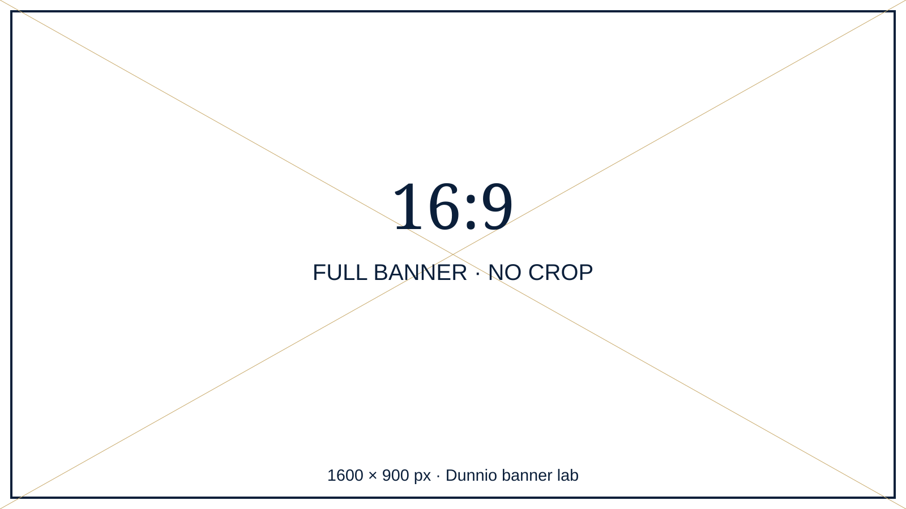

CONTENT EDITOR / RESPONSIVE ART DIRECTION
Ảnh đúng tỉ lệ.
Nội dung trọn vẹn.
Thử các tỉ lệ mẫu hoặc chọn ảnh PC, tablet và mobile riêng. Đổi kích thước cửa sổ để xem nguồn ảnh thay đổi. Mỗi ảnh được hiển thị đầy đủ theo tỉ lệ gốc, không ép chiều cao.
TỈ LỆ MẪU
Nguồn mobile dùng mẫu dọc riêng. Mẫu 9:16 áp dụng cả hai nguồn để kiểm tra ảnh dài.
JPEG, PNG, WebP · tối đa 12 MB/ảnh. Ảnh chỉ ở bộ nhớ phiên duyệt, không được gửi hoặc lưu vào CMS.
Để đổi banner trên 5 trang: sửa đường dẫn và kích thước thật trong assets/banner-config.js. Đây là bộ prototype tĩnh, không phải màn hình quản trị CMS.

Đang đọc kích thước ảnh…
Viền quanh banner và dòng chữ ở đáy phải hiển thị đầy đủ. Nếu dùng ảnh có chữ, cần xuất một bố cục dọc riêng cho mobile; đổi CSS không thể làm chữ trong ảnh ngang tự sắp xếp lại.